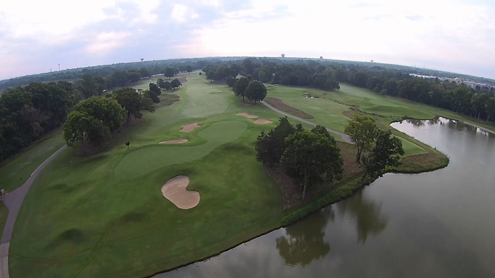

Old Fort Golf Club is one of the most decorated public courses in Tennessee — and one of the most underrated in the entire Nashville region. Owned and operated by the City of Murfreesboro, it sits along the banks of the Stones River adjacent to Fortress Rosecrans, the largest earthwork fortification built during the Civil War, and the antebellum landscape surrounding the course gives it a character that few public layouts in the state can match. Since opening in 1985, Old Fort has hosted USGA qualifiers, Korn Ferry Tour qualifying events, Tennessee Golf Association tournaments, Tennessee PGA Section events, and NCAA collegiate championships — a tournament resume that belongs to courses charging twice its daily-fee price.
A major renovation completed in 2024 by architect Nathan Crace transformed an already well-regarded course into something genuinely exceptional. The project earned 3rd Place for Best Public Course Renovation in the United States from Golf Inc., an Honorable Mention for Best Public Course Renovation from Golf Digest, and 3rd Place in Golf Digest's Best New or Newly Renovated Most Affordable Course category. The renovated layout now stretches to 7,214 yards from the back tees with six sets of tees ranging down to 5,002 yards, making it accessible for players at every level without softening the challenge for those playing from the tips.
The renovated Old Fort layout plays through sweeping river-bottom terrain along the Stones River, with the earthworks of Fortress Rosecrans visible from multiple holes and serving as a constant reminder of the historic ground the course occupies. The routing features tricky doglegs, narrow tree-lined corridors off the tee, strategic bunker placement throughout, and water coming into play regularly — a combination that reviews consistently describe as fair but unforgiving on off days. The greens are a particular point of pride, rolling fast and true with significant undulation that rewards good approach shot placement and punishes short-sided misses. Every hole carries some form of trouble, but the layout is designed to present multiple options rather than forced carries, making it more strategic than purely penal.
With six tee sets, the course is genuinely playable for golfers of all abilities. The back tees demand length and precision at 7,214 yards; the forward tees at 5,002 yards open the course up considerably. The practice range is irons-only, and two large dedicated putting and chipping greens are available for pre-round warmup. GPS carts track pace of play. Dress code is enforced: collared shirts preferred, no cut-off shorts, bathing suits, or tank tops. Tee times can be reserved up to five days in advance online or by calling (615) 896-2448.
The renovation completed by architect Nathan Crace in 2024 represents the most significant upgrade in the course's history. The original 1985 design by Leon Howard had already been updated with new greens, tee complexes, and bunkers in 2003, but the 2024 project was more comprehensive — reshaping the routing, expanding the tee set range from four to six options, and pushing the back tee yardage to 7,214 yards. The national recognition from both Golf Inc. and Golf Digest confirmed what Murfreesboro golfers had been saying for years: Old Fort plays like a private club-caliber course at a municipal price point.
Old Fort's tournament history is extensive for a daily-fee municipal course. It has served as a qualifying site for the Korn Ferry Tour's Simmons Bank Open and regularly hosts USGA Boys and Girls Junior Amateur qualifiers, Tennessee Golf Association championships, and Tennessee PGA Section events. Collegiate tournaments have also called Old Fort home. For traveling golfers who want to play a course that tests genuine tournament-level conditions, Old Fort delivers at a fraction of what comparable private or resort courses charge.
All green fee rates are walking rates with cart fees charged separately — a structure that keeps base prices accessible and lets walkers pay accordingly. Updated rates went into effect June 1, 2025; check the club's website or call (615) 896-2448 for current pricing. Based on recent booking data, 18-hole rounds with cart have been running approximately $52–$62 on weekdays and up to $58–$65 on weekends. Murfreesboro city residents receive discounted rates with a valid government-issued ID at check-in. Senior rates and twilight rates are also available. The driving range is irons-only.
Old Fort's loyalty program costs $15 per year and rewards players for every dollar spent on green fees, cart fees, and pull cart fees. Points accumulate throughout the calendar year: 200 points earns a free 9-hole green fee, and 400 points earns a free 18-hole green fee (cart not included). Members also receive 10% off golf shop merchandise (excluding sale items and some Ping equipment) and $1 off range ball tokens. Renewing before year's end carries points over into the following year. For any golfer who plays Old Fort more than a few times per season, the program pays for itself quickly.
Old Fort supports an active golf community year-round. The Men's Golf Association, Ladies' Golf Association, and Senior League each run full competitive schedules. Junior golf programs, group clinics, and private instruction are available through the pro staff. The Bloomfield Links program and a Youth on Course partnership extend affordable access to junior golfers. Club fitting services are also offered on-site. Contact the pro shop at (615) 896-2448 for current lesson and program details.
Old Fort Golf Club is located at 1028 Golf Lane, Murfreesboro, TN 37129, approximately 35 minutes southeast of downtown Nashville. Email: oldfortgolf@murfreesborotn.gov. Call (615) 896-2448 for tee times and course information.